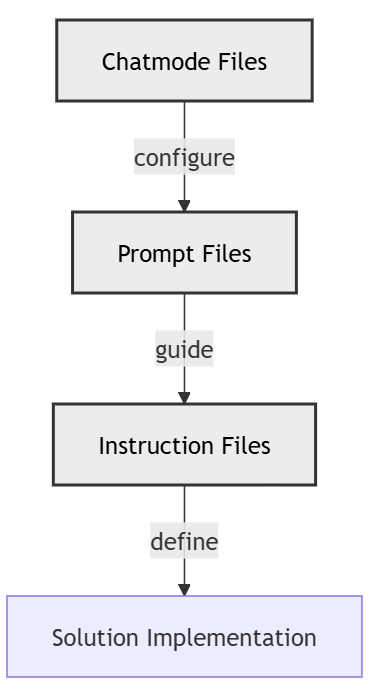

AI-Assisted Greenfield Software Development, Part 2: Core Instructions
This is the second post in the series on AI assisted greenfield software development. This post builds on the first post AI-Assisted Greenfield Software Development - Part 1 Business Requirements. If you haven’t read that post, you might want to start there.
In this post I’ll cover the instructions, prompts, and chat modes I used to start to lay down the guidance for turning requirements into code. These files are critical for controlling the AI output and having a comprehensive set of instructions, prompts, and chat modes greatly increase the chances of getting AI to produce something usable.

GitHub Copilot Instruction Files
Instruction files provide detailed guidance for Copilot to follow when generating code. They define the rules, best practices, and constraints for specific tasks or domains. These files ensure consistency and quality in AI-generated outputs.
GitHub Copilot Prompt Files
Prompt files are used to define the context and objectives for Copilot in a specific session. They include the task description, expected output format, and any additional parameters to guide the AI in generating relevant and actionable content.
GitHub Copilot Chat Mode Files
Chat mode files configure Copilot’s behavior in a specific chat mode. They define the tools available, the model to use, and the overall purpose of the session. These files enable Copilot to act as a specialized assistant tailored to the needs of the project.
For more on instruction files, see Sharing Instructions with the Team
Relationships Between Chat Modes, Prompts, and Instruction Files

Chat mode files configure the behavior of the AI by defining tools, models, and session-specific parameters. These chat modes use prompt files to guide the AI in generating specific outputs, such as instruction files, prompts, and generated code. Instruction files, in turn, provide detailed guidance for implementing the solution, ensuring consistency and adherence to best practices. Together, these components form a cohesive workflow that bridges high-level configuration with actionable implementation.
Overview of Core Files
In this post I’ll cover one chat mode file, one prompt file, and four instruction files that are core to the framework I created to help implement the Academia solution. These files are not domain specific and can be easily used in other projects.
The ai-assisted-output.instructions.md Instruction File
The ai-assisted-output.instructions.md file is a comprehensive guide for ensuring the provenance, quality, and audit-ability of AI-generated artifacts. It defines the metadata requirements, workflows, and enforcement mechanisms necessary to maintain consistency and accountability in AI-assisted outputs. This file is critical for projects that rely on AI to generate code, documentation, or other artifacts, as it provides a structured approach to managing and tracking AI contributions.
Below is the metadata for the ai-assisted-output.instructions.md file followed by the full content of the file itself. The metadata is explained in detail in the instruction file.
ai_generated: true
model: "anthropic/claude-3.5-sonnet@2024-10-22"
operator: "johnmillerATcodemag-com"
chat_id: "ai-assisted-output-policy-2025-10-15"
prompt: |
Create comprehensive AI provenance and logging policy for
all AI-assisted outputs in the repository, defining required
metadata, workflow, and enforcement.
started: "2025-10-15T13:00:00Z"
ended: "2025-10-15T13:45:00Z"
task_durations:
- task: "policy design"
duration: "00:20:00"
- task: "workflow specification"
duration: "00:15:00"
- task: "template creation"
duration: "00:10:00"
total_duration: "00:45:00"
ai_log: "ai-logs/2025/10/15/ai-assisted-output-policy-2025-10-15/conversation.md"
source: ".github/prompts/create-ai-assisted-output-instructions.prompt.md"
applyTo: "**/*"
AI-Assisted Output Instructions
This policy keeps AI-generated artifacts audit-able with minimal overhead. Follow it for all code, docs, diagrams, tests, or data touched by an AI assistant.
Quick Obligations
- Always work inside an active chat with a unique
chat_id; block output otherwise. - Capture the exact
provider/model@versionshown by the tool before generating content. - Embed provenance metadata (front matter or sidecar) including the raw prompt and timestamps.
- Store full chat logs under
ai-logs/<yyyy>/<mm>/<dd>/<chat-id>/withconversation.mdandsummary.md. - Record task duration, keep README entries for notable new artifacts, and run the checklists below before committing.
Metadata Placement
- Markdown or formats with front matter: embed YAML at the top of the file.
- Non-front-matter formats: create
<artifact>.meta.mdwith the same fields. - Use lowercase file paths; never create sidecars when front matter is possible.
Canonical Metadata Fields
Every AI-assisted artifact must include:
ai_generated: truemodel: "<provider>/<model>@<version>"operator: "<github-username>"(must be the GitHub username, e.g., “johnmillerATcodemag-com”)chat_id: "<chat-id>"prompt: |+ exact user promptstarted,ended(ISO8601)task_durations:list of{task, duration}entriestotal_durationai_log: "ai-logs/<yyyy>/<mm>/<dd>/<chat-id>/conversation.md"source:creator or prompt file
For instruction files (.instructions.md): Also include:
description: "<one-line purpose>"applyTo: "<glob pattern>"(e.g., ‘’, ‘src//.py’, ‘**/.bicep’)
For prompt files (.prompt.md): Also include:
description: "<one-line purpose>"context: "<relevant context or constraints>"expected_output: "<type of output expected>"
For chat mode files (.chatmode.md): Also include:
description: "<one-line purpose>"chatmode_type: "<type of chat mode>"(e.g., ‘coding’, ‘research’, ‘testing’)capabilities: []list of chat mode capabilities
Sample Front Matter
---
ai_generated: true
model: "openai/gpt-4o@2024-11-20"
operator: "johnmillerATcodemag-com"
chat_id: "2025-04-18-refactor"
prompt: |
Exact request that triggered the artifact.
started: "2025-04-18T17:03:11Z"
ended: "2025-04-18T17:06:54Z"
task_durations:
- task: "draft"
duration: "00:02:20"
- task: "review"
duration: "00:01:23"
total_duration: "00:03:43"
ai_log: "ai-logs/2025/04/18/2025-04-18-refactor/conversation.md"
source: "johnmillerATcodemag-com"
---
Sample Front Matter (Instruction File)
---
ai_generated: true
model: "anthropic/claude-sonnet-4.5@unknown"
operator: "johnmillerATcodemag-com"
chat_id: "2025-10-28-meta-instructions"
prompt: |
create an instruction file to guide an ai assistant in the generation
of instruction files. optimize the instruction file to minimize the
number of tokens required.
started: "2025-10-28T14:30:00Z"
ended: "2025-10-28T14:35:00Z"
task_durations:
- task: "draft"
duration: "00:03:00"
- task: "optimize"
duration: "00:02:00"
total_duration: "00:05:00"
ai_log: "ai-logs/2025/10/28/2025-10-28-meta-instructions/conversation.md"
source: "johnmillerATcodemag-com"
description: "Guide for generating instruction files"
applyTo: "**/*.instructions.md"
---
Sample Front Matter (Prompt File)
---
ai_generated: true
model: "anthropic/claude-sonnet-4.5@unknown"
operator: "johnmillerATcodemag-com"
chat_id: "2025-10-28-data-analysis"
prompt: |
create a prompt template for data analysis tasks
started: "2025-10-28T15:00:00Z"
ended: "2025-10-28T15:05:00Z"
task_durations:
- task: "draft"
duration: "00:05:00"
total_duration: "00:05:00"
ai_log: "ai-logs/2025/10/28/2025-10-28-data-analysis/conversation.md"
source: "johnmillerATcodemag-com"
description: "Prompt template for data analysis"
context: "Python data science workflows"
expected_output: "Analysis code and visualizations"
---
Sample Front Matter (Chat Mode File)
---
ai_generated: true
model: "anthropic/claude-sonnet-4.5@unknown"
operator: "johnmillerATcodemag-com"
chat_id: "2025-10-28-test-chatmode"
prompt: |
create a chat mode configuration for automated testing
started: "2025-10-28T16:00:00Z"
ended: "2025-10-28T16:10:00Z"
task_durations:
- task: "draft"
duration: "00:07:00"
- task: "validate"
duration: "00:03:00"
total_duration: "00:10:00"
ai_log: "ai-logs/2025/10/28/2025-10-28-test-chatmode/conversation.md"
source: "johnmillerATcodemag-com"
description: "Automated testing chat mode configuration"
chatmode_type: "testing"
capabilities:
- "unit testing"
- "integration testing"
- "coverage reporting"
---
Model Identification Guide:
- GitHub Copilot Chat (as of Oct 2025): Uses
anthropic/claude-sonnet-4.5@unknownunless you can identify the exact version - OpenAI GPT-4o:
openai/gpt-4o@2024-11-20(or specific version) - Claude 3.5 Sonnet:
anthropic/claude-3.5-sonnet@2024-10-22 - Claude Sonnet 4.5:
anthropic/claude-sonnet-4.5@<version>(use@unknownif version not shown) - If UI shows marketing names like “GPT-5-Codex”, map to the actual underlying model
- When version is not surfaced, use
@unknown - Track additional models used in the same chat inside
summary.md
Chat Workflow (Canonical)
- Start a fresh chat → capture
chat_id, operator, and model label immediately. - Scaffold logs on first artifact at
ai-logs/<yyyy>/<mm>/<dd>/<chat-id>/with:conversation.md: full timestamped transcript.summary.md: objectives, outcomes, models used, remaining work.- Optional
artifacts/for files not checked into the repo.
- Generate artifact only if chat context is active; inject metadata using the captured model string.
- Update logs after each artifact; export current transcript, append deliverables list, and record pending actions.
- Close by finalizing
summary.md, ensuring task durations and README updates are complete.
Minimal conversation.md
# AI Conversation Log
- Chat ID: <chat-id>
- Operator: <github-username>
- Model: <provider>/<model>@<version>
- Started: <ISO8601>
- Ended: <ISO8601>
- Total Duration: <hh:mm:ss>
## Context
- Inputs: <files/constraints>
- Targets: <intended artifacts>
## Exchanges
[<timestamp>] <user>
```text
<prompt>
```
[<timestamp>] <provider>/<model>@<version>
```text
<assistant reply>
```
## Artifacts
- <path> – <one-line purpose>
## Next Steps
- [ ] <action>
Minimal summary.md
# Session Summary – <chat-id>
**Date**: <YYYY-MM-DD>
**Operator**: <github-username>
**Model**: <provider>/<model>@<version>
**Duration**: <hh:mm:ss>
## Objective
- <goal>
## Deliverables
1. `<path>` – <purpose>
## Decisions
- <decision>: <rationale>
## Follow-up
- [ ] <action>
## Metadata
```yaml
chat_id: <chat-id>
started: <ISO8601>
ended: <ISO8601>
total_duration: <hh:mm:ss>
models_used:
- <provider>/<model>@<version>
artifacts_count: <int>
files_modified: <int>
```
Placement & README
- Keep this file at
.github/instructions/ai-assisted-output.instructions.md. - For every notable new artifact, add a bullet in
README.mdlinking to the artifact (and optionalai_log) under an “AI-Assisted Artifacts” section. - Temporary scratch work still requires logs and metadata but may skip README updates.
Quality Checklist
- Metadata complete and embedded (or sidecar when required).
- Model label copied verbatim from the chat UI.
- Prompt, timestamps, task durations, and totals recorded.
ai-logs/.../conversation.mdandsummary.mdexist and reference the artifact.- README updated for new durable artifacts.
- No sensitive data captured.
- Tests/docs run or noted as pending.
PR Checklist
- Every changed AI-generated file references a real
chat_idandai_log. - All logs committed alongside artifacts.
- README entries present where required.
- Provenance fields pass CI (formatter, YAML syntax, existing paths).
Copilot / Tooling Requirements
- Auto-create chat IDs, log folders, and metadata scaffolds on first artifact.
- Prevent artifact generation without live chat context.
- Export transcripts and summaries automatically.
- Surface the active model name/version so it can be copied as
provider/model@version. - Track files generated per chat to support audits.
Enforcement
- CI script
Verify AI Provenancechecks Markdown front matter forai_generated,chat_id,ai_log, and valid log paths. Extend similarly for other formats as needed.
Remediation
- Missing metadata → add required fields and regenerate logs.
- Orphaned artifacts → create
ai-logs/...records retroactively and update README. - Sidecar misuse → move metadata into front matter when supported.
Summary of the ai-assisted-output.instructions.md File
This instruction file outlines the obligations for working with AI-generated artifacts, including the need to capture metadata such as the model used, operator, and timestamps. It emphasizes the importance of embedding provenance metadata directly into the artifacts or using sidecar files when necessary. The file also provides detailed workflows for managing AI-assisted sessions, including logging conversations, summarizing outcomes, and ensuring proper placement of artifacts.
Additionally, the file includes examples of metadata for various types of AI-generated files, such as instruction files, prompt files, and chat mode files. These examples serve as templates for ensuring that all artifacts adhere to the defined standards. The enforcement section highlights the use of CI scripts to verify compliance with the metadata requirements, ensuring that all AI-generated outputs are properly documented and traceable.
The metadata portion captures essential information about the creation of the instruction file itself, including the model used, operator, chat ID, prompt, and timestamps. This metadata ensures that the creation of the instruction file is also auditable and traceable.
The conversation.md and summary.md files associated with this instruction file would provide a detailed record of the interactions that led to its creation, including the specific prompts used and the decisions made during the process. The summary file is also structured to capture the objectives, deliverables, decisions, and follow-up actions related to the development of the instruction file. The summary file also allows a conversation to be interrupted and continued later.
While the ai-assisted-output.instructions.md file focuses on the overarching policies and workflows for managing AI-generated artifacts, the instruction-file-generation.instructions.md file dives deeper into the specific guidelines for creating instruction files. This next file provides a token-optimized approach to generating instruction files, ensuring clarity and efficiency in their creation. Let’s explore its contents and how it complements the broader framework established in the ai-assisted-output.instructions.md file.
The instruction-file-generation.instructions.md Instruction File
The instruction-file-generation.instructions.md file is a specialized guide for creating instruction files. It emphasizes token efficiency while ensuring clarity and usability. This file provides a structured approach to generating instruction files that are both concise and comprehensive, making it an essential tool for projects that rely on AI-assisted workflows.
Below is the metadata for the instruction-file-generation.instructions.md file followed by the full content of the file itself. The metadata is explained in detail in the instruction file.
ai_generated: true
model: "anthropic/claude-3.5-sonnet@2024-10-22"
operator: "johnmillerATcodemag-com"
chat_id: "instruction-file-generation-policy-2025-10-20"
prompt: |
Create a token-optimized instruction file for generating instruction files,
ensuring clarity and usability while minimizing token usage.
started: "2025-10-20T10:00:00Z"
ended: "2025-10-20T10:30:00Z"
task_durations:
- task: "draft"
duration: "00:15:00"
- task: "review"
duration: "00:10:00"
- task: "optimize"
duration: "00:05:00"
total_duration: "00:30:00"
ai_log: "ai-logs/2025/10/20/instruction-file-generation-policy-2025-10-20/conversation.md"
source: ".github/prompts/create-instruction-file-generation-instructions.prompt.md"
applyTo: "**/*.instructions.md"
Generating an Instruction File
This guide provides a streamlined approach to writing instruction files for AI-assisted development. It focuses on minimizing token usage while maintaining clarity and effectiveness. Follow these guidelines to ensure that generated instruction files are concise, actionable, and aligned with project goals.
Key Principles
- Clarity: Ensure that the instructions are easy to understand and follow.
- Token Efficiency: Use concise language to minimize token usage without sacrificing clarity.
- Actionability: Provide clear steps and examples to guide users in implementing the instructions.
- Consistency: Adhere to a standard format and structure for all instruction files.
Metadata Requirements
Every instruction file must include the following metadata:
ai_generated: truemodel: "<provider>/<model>@<version>"operator: "<github-username>"chat_id: "<chat-id>"prompt: |+ exact user promptstarted,ended(ISO8601)task_durations:list of{task, duration}entriestotal_durationai_log: "ai-logs/<yyyy>/<mm>/<dd>/<chat-id>/conversation.md"source:creator or prompt filedescription: "<one-line purpose>"applyTo: "<glob pattern>"
Structure of Instruction Files
- Introduction: Briefly describe the purpose of the instruction file.
- Key Principles: Highlight the main principles or guidelines.
- Metadata Requirements: Define the metadata fields required for the file.
- Examples: Provide sample metadata and instructions for reference.
- Checklist: Include a checklist to ensure compliance with the guidelines.
Examples
Sample Metadata
---
ai_generated: true
model: "openai/gpt-4o@2024-11-20"
operator: "johnmillerATcodemag-com"
chat_id: "2025-04-18-instruction-file"
prompt: |
Create an instruction file for generating instruction files.
started: "2025-04-18T12:00:00Z"
ended: "2025-04-18T12:15:00Z"
task_durations:
- task: "draft"
duration: "00:10:00"
- task: "review"
duration: "00:05:00"
total_duration: "00:15:00"
ai_log: "ai-logs/2025/04/18/2025-04-18-instruction-file/conversation.md"
source: "johnmillerATcodemag-com"
description: "Guide for generating instruction files"
applyTo: "**/*.instructions.md"
---
Sample Checklist
- Metadata is complete and accurate.
- Instructions are clear and concise.
- Examples are relevant and easy to follow.
- Checklist is included to ensure compliance.
Summary of the instruction-file-generation.instructions.md File
This instruction file provides a clear and efficient framework for creating instruction files. By focusing on token optimization and clarity, it ensures that generated files are both concise and effective. The metadata requirements and structured format help maintain consistency across projects, while the examples and checklist provide practical guidance for implementation.
Of note is the applyTo field in the metadata which specifies that this instruction file applies to all files with the .instructions.md extension. This ensures that any instruction file generated in the repository adheres to the guidelines set forth in this document and that is excluded from the context when generating other types of files.
The instruction-file-generation.instructions.md file complements the broader framework established in the ai-assisted-output.instructions.md file by diving deeper into the specific requirements for instruction files. Together, these files form a comprehensive approach to managing AI-assisted workflows.
Next, we will explore the prompt-file-generation.instructions.md file, which provides guidelines for creating prompt files that effectively guide AI in generating desired outputs.
The prompt-file-generation.instructions.md Instruction File
The prompt-file-generation.instructions.md file is a specialized guide for creating prompt files. It focuses on defining clear, actionable, and context-rich prompts that guide the AI in producing high-quality outputs. This file is essential for ensuring that AI-generated content aligns with project objectives and maintains a high standard of quality.
Below is the metadata for the prompt-file-generation.instructions.md file followed by the full content of the file itself. The metadata is explained in detail in the instruction file.
ai_generated: true
model: "anthropic/claude-3.5-sonnet@2024-10-22"
operator: "johnmillerATcodemag-com"
chat_id: "prompt-file-generation-policy-2025-10-25"
prompt: |
Create a comprehensive guide for generating prompt files,
emphasizing clarity, context, and actionability.
started: "2025-10-25T09:00:00Z"
ended: "2025-10-25T09:45:00Z"
task_durations:
- task: "guide creation"
duration: "00:30:00"
- task: "review"
duration: "00:15:00"
total_duration: "00:45:00"
ai_log: "ai-logs/2025/10/25/prompt-file-generation-policy-2025-10-25/conversation.md"
source: ".github/prompts/create-prompt-file-generation-instructions.prompt.md"
applyTo: "**/*.prompt.md"
Prompt File Generation Instructions
This instruction file provides a detailed guide for creating prompt files that effectively communicate tasks and expectations to the AI. Well-structured prompt files are crucial for obtaining high-quality, relevant, and actionable AI outputs. Follow these instructions to create prompt files that enhance the effectiveness of AI assistance in your projects.
Key Components of a Prompt File
- Description: A brief overview of the prompt file’s purpose.
- Context: Relevant background information or constraints that the AI should consider.
- Expected Output: The type of output expected from the AI, including format and content requirements.
- Examples: Sample prompts and expected AI responses for reference.
- Checklist: A list of items to verify before finalizing the prompt file.
Metadata Requirements
Every prompt file must include the following metadata:
ai_generated: truemodel: "<provider>/<model>@<version>"operator: "<github-username>"chat_id: "<chat-id>"prompt: |+ exact user promptstarted,ended(ISO8601)task_durations:list of{task, duration}entriestotal_durationai_log: "ai-logs/<yyyy>/<mm>/<dd>/<chat-id>/conversation.md"source:creator or prompt filedescription: "<one-line purpose>"context: "<relevant context or constraints>"expected_output: "<type of output expected>"
Examples
Sample Metadata
---
ai_generated: true
model: "openai/gpt-4o@2024-11-20"
operator: "johnmillerATcodemag-com"
chat_id: "2025-04-18-prompt-file"
prompt: |
Create a prompt file for generating prompt files.
started: "2025-04-18T12:00:00Z"
ended: "2025-04-18T12:15:00Z"
task_durations:
- task: "draft"
duration: "00:10:00"
- task: "review"
duration: "00:05:00"
total_duration: "00:15:00"
ai_log: "ai-logs/2025/04/18/2025-04-18-prompt-file/conversation.md"
source: "johnmillerATcodemag-com"
description: "Guide for generating prompt files"
context: "AI-assisted development workflows"
expected_output: "Clear and actionable prompts"
---
Sample Checklist
- Metadata is complete and accurate.
- Description clearly conveys the purpose of the prompt file.
- Context provides relevant background information.
- Expected output is well-defined and achievable.
- Examples are included and correctly formatted.
- Checklist is included to ensure compliance.
Summary of the prompt-file-generation.instructions.md File
This instruction file provides comprehensive guidelines for creating prompt files that effectively guide AI in generating desired outputs. By emphasizing clarity, context, and action-ability, it ensures that AI-generated content is relevant, high-quality, and aligned with project objectives. The metadata requirements and structured format promote consistency and best practices across projects.
The prompt-file-generation.instructions.md file ensures that prompt files are clear, actionable, and context-rich, enabling AI to produce high-quality outputs. Building on this, the chatmode-file-generation.instructions.md file provides a comprehensive guide for creating chat mode files. These files define the behavior, capabilities, and configuration of AI chat modes, ensuring they are tailored to specific tasks and workflows. Let’s explore its contents and how it complements the framework established by the other instruction files.
The chatmode-file-generation.instructions.md Instruction File
The chatmode-file-generation.instructions.md file is a specialized guide for creating chat mode files. It defines the configuration, behavior, and capabilities of AI chat modes, ensuring they are tailored to specific tasks and workflows. This file is essential for projects that require precise control over AI chat mode behavior and integration with other tools and processes.
Below is the metadata for the chatmode-file-generation.instructions.md file followed by the full content of the file itself. The metadata is explained in detail in the instruction file.
ai_generated: true
model: "anthropic/claude-3.5-sonnet@2024-10-22"
operator: "johnmillerATcodemag-com"
chat_id: "chatmode-file-generation-policy-2025-10-30"
prompt: |
Create a comprehensive guide for generating chat mode files,
detailing configuration, behavior, and capabilities.
started: "2025-10-30T11:00:00Z"
ended: "2025-10-30T11:50:00Z"
task_durations:
- task: "guide creation"
duration: "00:40:00"
- task: "review"
duration: "00:10:00"
total_duration: "00:50:00"
ai_log: "ai-logs/2025/10/30/chatmode-file-generation-policy-2025-10-30/conversation.md"
source: ".github/prompts/create-chatmode-file-generation-instructions.prompt.md"
applyTo: "**/*.chatmode.md"
Chat Mode File Generation Instructions
This instruction file provides a detailed guide for creating chat mode files that define the behavior, capabilities, and configuration of AI chat modes. Properly configured chat mode files are crucial for ensuring that AI chat modes perform optimally and are well-integrated with other tools and processes in the development workflow. Follow these instructions to create chat mode files that enhance the effectiveness and reliability of AI assistance in your projects.
Key Components of a Chat Mode File
- Description: A brief overview of the chat mode file’s purpose.
- Chat Mode Type: The type of chat mode being configured (e.g., coding, research, testing).
- Capabilities: The specific abilities or functions the chat mode can perform.
- Configuration: Settings and parameters that define the chat mode’s behavior.
- Examples: Sample chat mode configurations for reference.
- Checklist: A list of items to verify before finalizing the chat mode file.
Metadata Requirements
Every chat mode file must include the following metadata:
ai_generated: truemodel: "<provider>/<model>@<version>"operator: "<github-username>"chat_id: "<chat-id>"prompt: |+ exact user promptstarted,ended(ISO8601)task_durations:list of{task, duration}entriestotal_durationai_log: "ai-logs/<yyyy>/<mm>/<dd>/<chat-id>/conversation.md"source:creator or prompt filedescription: "<one-line purpose>"chatmode_type: "<type of chat mode>"(e.g., ‘coding’, ‘research’, ‘testing’)capabilities: []list of chat mode capabilities
Examples
Sample Metadata
---
ai_generated: true
model: "openai/gpt-4o@2024-11-20"
operator: "johnmillerATcodemag-com"
chat_id: "2025-04-18-chatmode-file"
prompt: |
Create a chat mode file for generating chat mode files.
started: "2025-04-18T12:00:00Z"
ended: "2025-04-18T12:15:00Z"
task_durations:
- task: "draft"
duration: "00:10:00"
- task: "review"
duration: "00:05:00"
total_duration: "00:15:00"
ai_log: "ai-logs/2025/04/18/2025-04-18-chatmode-file/conversation.md"
source: "johnmillerATcodemag-com"
description: "Guide for generating chat mode files"
chatmode_type: "coding"
capabilities:
- "code completion"
- "code suggestions"
- "documentation generation"
---
Sample Checklist
- Metadata is complete and accurate.
- Description clearly conveys the purpose of the chat mode file.
- Chat Mode type is correctly specified.
- Capabilities are relevant and comprehensive.
- Configuration settings are well-defined.
- Examples are included and correctly formatted.
- Checklist is included to ensure compliance.
Summary of the chatmode-file-generation.instructions.md File
This instruction file provides comprehensive guidelines for creating chat mode files that define the behavior, capabilities, and configuration of AI chat modes. By emphasizing clear structure, relevant capabilities, and precise configuration, it ensures that AI chat modes are effectively tailored to project requirements. The metadata requirements and structured format promote consistency and best practices across projects.
The chatmode-file-generation.instructions.md file builds upon the foundations set by the previous instruction files, providing the final piece of the puzzle for managing AI-assisted greenfield software development. With these instruction files, prompts, and chat modes, development teams are well-equipped to leverage AI assistance effectively, enhancing productivity, improving code quality, and accelerating software development timelines.
The prompt-engineer.chatmode.md Chat Mode File
The prompt-engineer.chatmode.md file is a specialized configuration for an AI chat mode designed to assist in crafting and refining prompts. This chat mode is tailored to ensure that prompts are clear, actionable, and aligned with the desired outcomes. By leveraging this chat mode, teams can streamline the process of creating effective prompts, which are critical for guiding AI behavior and achieving high-quality outputs.
Below is the metadata for the prompt-engineer.chatmode.md file followed by the full content of the file itself. The metadata is explained in detail in the chat mode file.
ai_generated: true
model: "anthropic/claude-3.5-sonnet@2024-10-22"
operator: "johnmillerATcodemag-com"
chat_id: "prompt-engineer-chatmode-policy-2025-11-01"
prompt: |
Create a chat mode configuration for a prompt engineering assistant,
detailing its capabilities and configuration.
started: "2025-11-01T10:00:00Z"
ended: "2025-11-01T10:40:00Z"
task_durations:
- task: "chat mode design"
duration: "00:25:00"
- task: "review"
duration: "00:15:00"
total_duration: "00:40:00"
ai_log: "ai-logs/2025/11/01/prompt-engineer-chatmode-policy-2025-11-01/conversation.md"
source: ".github/prompts/create-prompt-engineer-chatmode-instructions.prompt.md"
description: "Chat Mode configuration for prompt engineering"
chatmode_type: "prompt-engineering"
capabilities:
- "prompt refinement"
- "clarity enhancement"
- "context alignment"
- "output optimization"
---
Prompt Engineer Chat Mode Configuration
This chat mode is designed to assist in the creation and refinement of prompts for AI systems. It provides tools and capabilities to ensure that prompts are well-structured, contextually relevant, and optimized for generating high-quality outputs. The chat mode is particularly useful for teams that rely on AI to produce consistent and actionable results.
Key Features
- Prompt Refinement: The chat mode can analyze and improve existing prompts to enhance clarity and effectiveness.
- Clarity Enhancement: It ensures that prompts are easy to understand and free of ambiguity.
- Context Alignment: The chat mode aligns prompts with the specific context and objectives of the task.
- Output Optimization: It optimizes prompts to achieve the desired output format and quality.
Metadata Requirements
The prompt-engineer.chatmode.md file includes detailed metadata to ensure traceability and compliance with project standards. This metadata captures the chat mode’s purpose, capabilities, and configuration details.
Examples
Sample Metadata
---
ai_generated: true
model: "openai/gpt-4o@2024-11-20"
operator: "johnmillerATcodemag-com"
chat_id: "2025-04-18-prompt-engineer-chatmode"
prompt: |
Create a chat mode configuration for a prompt engineering assistant.
started: "2025-04-18T12:00:00Z"
ended: "2025-04-18T12:30:00Z"
task_durations:
- task: "draft"
duration: "00:20:00"
- task: "review"
duration: "00:10:00"
total_duration: "00:30:00"
ai_log: "ai-logs/2025/04/18/2025-04-18-prompt-engineer-chatmode/conversation.md"
source: "johnmillerATcodemag-com"
description: "Chat Mode configuration for prompt engineering"
chatmode_type: "prompt-engineering"
capabilities:
- "prompt refinement"
- "clarity enhancement"
- "context alignment"
- "output optimization"
---
Sample Checklist
- Metadata is complete and accurate.
- Chat Mode type and capabilities are clearly defined.
- Configuration aligns with project objectives.
- Examples are included and correctly formatted.
- Checklist is included to ensure compliance.
Summary of the prompt-engineer.chatmode.md File
The prompt-engineer.chatmode.md file provides a comprehensive configuration for an AI chat mode focused on prompt engineering. By defining its capabilities and configuration, this file ensures that the chat mode is well-equipped to assist in creating and refining prompts. The metadata requirements and structured format promote consistency and traceability, making it an essential tool for projects that rely on AI-generated outputs.
This chat mode file complements the instruction and prompt files by providing a specialized tool for optimizing the prompts that guide AI behavior. Together, these components form a robust framework for managing AI-assisted workflows.
The check-context.prompt.md Prompt File
The check-context.prompt.md file is a specialized guide for verifying and aligning the context of AI-generated outputs. This file ensures that the AI’s outputs are relevant, accurate, and aligned with the project’s objectives. By using this prompt file, teams can maintain high standards of quality and consistency in their AI-assisted workflows.
Below is the metadata for the check-context.prompt.md file followed by the full content of the file itself. The metadata is explained in detail in the prompt file.
ai_generated: true
model: "anthropic/claude-sonnet-4.5@unknown"
operator: "johnmillerATcodemag-com"
chat_id: "2025-10-28-context-validation-v2"
prompt: |
update #file:check-context.prompt.md. create an token optimized prompt file to guide an ai assistant in validating the current context.
started: "2025-10-28T16:25:00Z"
ended: "2025-10-28T16:28:00Z"
task_durations:
- task: "review and validate"
duration: "00:03:00"
total_duration: "00:03:00"
ai_log: "ai-logs/2025/10/28/2025-10-28-context-validation-v2/conversation.md"
source: "johnmillerATcodemag-com"
description: "Validate context for conflicts and inconsistencies"
context: "Instruction files, prompts, agents, and workspace context"
expected_output: "Structured conflict analysis with recommendations"
tools: ["search", "edit", "fetch"]
mode: agent
---
Context Validation
Analyze current context (instructions, prompts, agents, workspace) for conflicts, contradictions, and inconsistencies.
Validation Categories
- Conflicting Instructions: Contradictory directives, incompatible requirements
- Factual Inconsistencies: Contradictory data, dates, numbers, or specifications
- Logical Contradictions: Mutually exclusive statements, circular dependencies
- Priority Conflicts: Competing priorities, incompatible scopes
- Technical Incompatibilities: Conflicting tech stacks, version/dependency conflicts
- Terminology Gaps: Inconsistent naming, undefined references, missing connections
- Redundancy: Duplicate instructions, overlapping processes
Output Format
For each issue found:
category: <conflict type>
description: <what conflicts>
location: <where it occurs>
impact: <severity: critical|high|medium|low>
recommendation: <resolution approach>
If no conflicts: state “Context validated. No conflicts detected.”
Validation Steps
- Load all instruction, prompt, and agent files
- Cross-reference directives for contradictions
- Check terminology consistency across files
- Identify duplicate or overlapping content
- Verify technical compatibility
- Report findings using output format
Summary of the check-context.prompt.md File
The check-context.prompt.md file provides a detailed guide for verifying and aligning the context of AI-generated outputs. By emphasizing relevance, accuracy, and alignment with project objectives, it ensures that AI-generated content meets high standards of quality and consistency. The metadata requirements and structured format promote best practices and trace-ability across projects.
This prompt file serves as a critical tool for maintaining the integrity of AI-assisted workflows, ensuring that all outputs are thoroughly vetted for context and relevance. Conflicting instructions, factual inconsistencies, logical contradictions, priority conflicts, technical incompatibilities, terminology gaps, and redundancy degrade AI performance and can lead to sub-optimal outcomes. Issues identified through this prompt should be addressed proactively and rerun when new instruction files are introduced.
This prompt file complements the instruction and chat mode files by providing a tool for ensuring that AI outputs are contextually appropriate and aligned with project goals. Together, these components form a robust framework for managing AI-assisted workflows.
Workflow for AI-Assisted Development

This diagram illustrates how core instructions and business requirements are used to create project-independent instructions and an implementation plan. These components, along with instruction files, guide the solution implementation process.
In this post, we’ve explored the essential components of the framework for AI-assisted software development. We’ve covered the relationships between chat modes, prompts, and instruction files, and delved into the specifics of the ai-assisted-output.instructions.md, instruction-file-generation.instructions.md, prompt-file-generation.instructions.md, chatmode-file-generation.instructions.md, and check-context.prompt.md files.
This framework provides a comprehensive and structured approach to managing AI-assisted workflows, ensuring clarity, consistency, and quality in AI-generated outputs. By following these guidelines and utilizing the provided instruction files, prompts, and chat modes, you can effectively leverage AI assistance to produce quality software artifacts that meet your project’s needs.
As you embark on your AI-assisted development journey, remember that this is an iterative process. Continuously refine your instructions, prompts, and chat modes based on feedback and evolving project needs. The key to effective AI assistance lies in clear communication, well-defined objectives, and a commitment to quality and best practices. By fostering a culture of continuous improvement, you can unlock the full potential of AI in your development workflows and achieve sustainable success.
Next time, we’ll look at the Project Independent Instructions that form the basis for reusable AI-assisted development practices across multiple projects.
Feedback and Disclaimer
Feedback is always welcome. Please direct it to AIP@pdata.com
Disclaimer
AI contributed to the writing to this blog post, but humans reviewed it, refined it, enhanced it and gave it soul.
Prompts:
- Insert a mermaid diagram that documents this workflow:
- Business Requirements are used to create the Generate Instructions prompt.
- The Generate Instructions prompt produces Instruction files
- Instruction files guide the Solution Implementation
- Insert descriptions of GitHub copilot instruction, prompt, and chat mode (chat mode) files
- Create a mermaid chart showing the relationships between chat modes, prompts, instruction files. Add a paragraph describing the interactions between these files.
- Insert the contents of the
ai-assisted-output.instructions.mdfile with an introductory paragraph, summary paragraphs, and a transition to theinstruction-file-generation.instructions.mdfile. - Insert the contents of the
instruction-file-generation.instructions.mdfile with an introductory paragraph, summary paragraphs, and a transition to theprompt-file-generation.instructions.mdfile. - Insert the contents of the
prompt-file-generation.instructions.mdfile with an introductory paragraph, summary paragraphs, and a transition to thechatmode-file-generation.instructions.mdfile. - Insert the contents of the
prompt-engineer.chatmode.mdfile with an introductory paragraph, summary paragraphs, and a transition to thecheck-context.prompt.mdfile. - Insert the contents of the
check-context.prompt.mdfile with an introductory paragraph, summary paragraphs, and a transition to the conclusion.
Original post